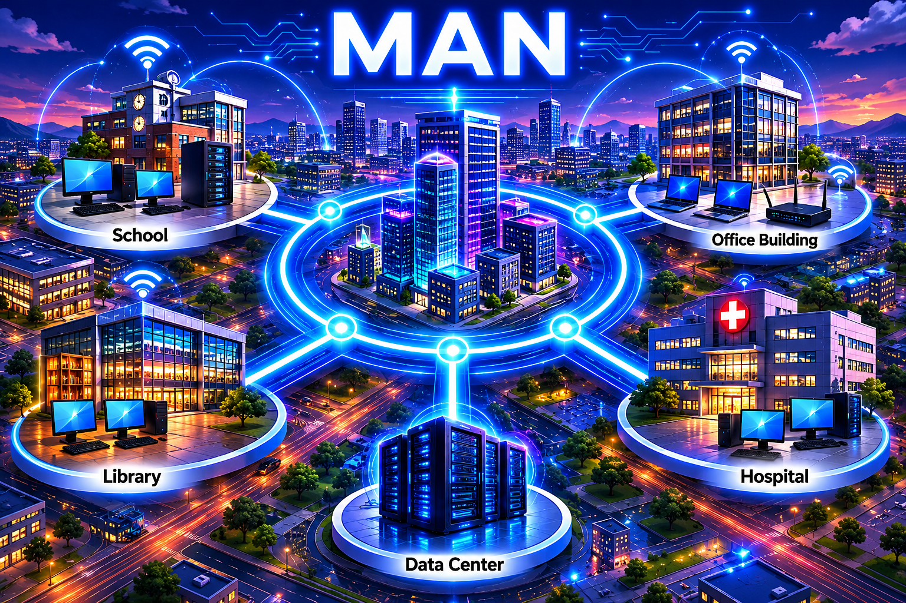

Mission:
Tap the items in the diagram, reveal the key information, answer both questions,
then unlock the clue to your next QR location.
Full hunt progress loading...

Tap the school, office building, library, hospital, data centre, city area and connecting links to explore the MAN topology.
What is a MAN?
A Metropolitan Area Network connects networks across a town, city, campus or local metropolitan area.
It is larger than a LAN but usually smaller than a WAN. A MAN can connect multiple buildings or sites that are close enough to be part of the same local area.
Benefits of a MAN
Connects multiple local sites across a town, city or campus.
Can provide faster local connectivity than wider long-distance links.
Supports shared services between nearby organisations or buildings.
Useful for linking schools, offices, data centres and public services.
Limitations of a MAN
More complex than a simple LAN.
May rely on service providers, fibre routes or wireless links.
Costs can increase as more sites are connected.
Security and resilience need careful planning across all connected sites.
RAF/AES Example
A MAN-style design could be used to link multiple buildings across a large site, camp, airfield or training estate.
For Communication Infrastructure Technicians, this links to route planning, fibre infrastructure, building entry points,
cabinets, patching, network resilience and connecting different areas of a site together.
Quick Check 1
Question: What does MAN stand for?
✅ Correct. MAN stands for Metropolitan Area Network.
❌ Not quite. MAN stands for Metropolitan Area Network.
Quick Check 2
Question: Which description best fits a MAN?
✅ Correct. A MAN connects networks across a metropolitan area, such as a town, city or campus.
❌ Not quite. A MAN usually connects sites across a town, city, campus or similar local area.
🔒 Clue locked. Explore all MAN items and answer both quick-check questions.
Next QR Clue Unlocked
TP6 Networks | Complete all 9 QR tasks to finish the hunt.